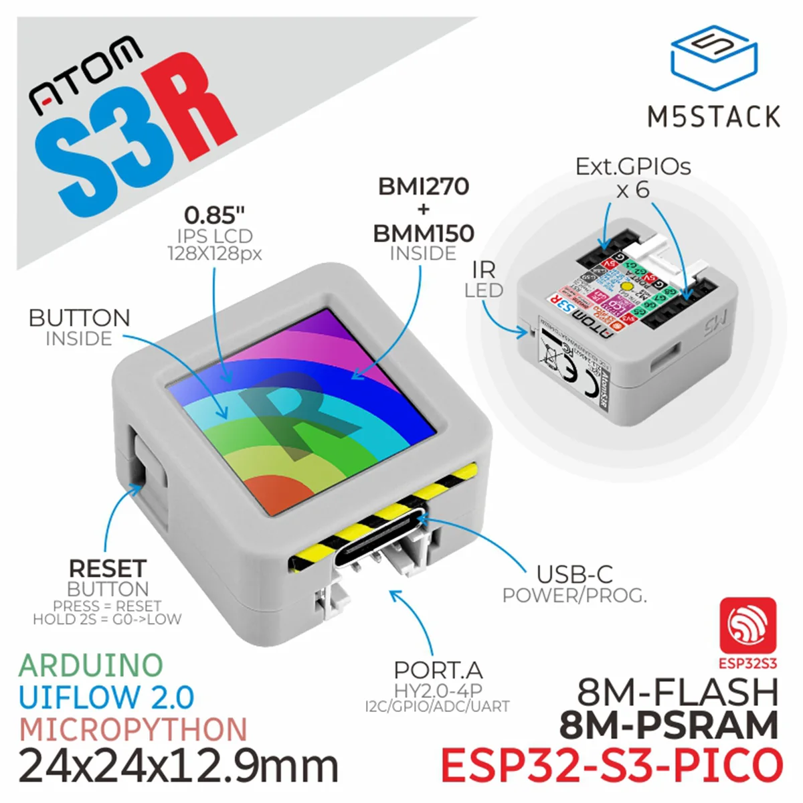

AtomS3R
M5Stack · M5Stack AtomS3R – ESP32-S3-PICO 8 MB PSRAM cube with 0.85" IPS
AtomS3R is a 0.85" 128x128 IPS ESP32 display board by M5Stack based on the ESP32-S3 with 8MB flash, 8MB Octal PSRAM.
Features, ports & interfaces
- SPI display
- 8 MB PSRAM – Octal
- 8 MB flash
- Wi-Fi 4 (802.11 b/g/n, 2.4 GHz) – version from the ESP32-S3 datasheet
- Bluetooth 5 (LE) – version from the ESP32-S3 datasheet
- IR emitter (12.46 m)
- USB-C (USB OTG, USB-Serial/JTAG)
- IMU: BMI270 6-axis + BMM150 magnetometer
Specifications
| Parameter | Value | Source |
|---|---|---|
| Screen size | 0.85" | source |
| Resolution | 128x128 | source |
| Panel | IPS | source |
| Display interface | SPI | source |
| Display driver | ST7735 (earlier: GC9107) | source |
| Touch | None | source |
| MCU / SoC | ESP32-S3-PICO-1-N8R8 (dual-core LX7, 240 MHz) | source |
| MCU family | ESP32-S3 | source |
| CPU frequency | 240 MHz | source |
| Flash | 8MB | source |
| PSRAM | 8MB Octal | source |
| Wi-Fi | 2.4 GHz Wi-Fi | source |
| Bluetooth | Bluetooth LE (SoC radio; not listed separately in the vendor spec table) | source |
| USB | USB Type-C (USB OTG, USB Serial/JTAG) | source |
| SKU | C126 | source |
| Category | M5Stack (all-in-one controllers) | |
| IMU | BMI270 6-axis + BMM150 magnetometer | source |
| IR | IR emitter (12.46 m) | source |
| Vendor | M5Stack |
Official links & documentation
Files
Offline copies are available on the interactive page.
- Sch_M5_AtomS3R_v0.4.1.pdf – original